Modelo representativo de un wheel motor GDY106, refinado con las fotografías, ensayos, el video CIMETP y el seminario de mantenimiento aportados. La documentación Komatsu identifica los sistemas; las formas internas, cantidades y medidas siguen siendo una reconstrucción.
Freno de estacionamiento multidisco seco con alojamiento fijo, pistón y resortes; carcasa de perfil suave y testero de ocho ventanas; campana y brida ventiladas; dos uniones de pernos; tapones y orejas; revestimientos de ranura, amarres de cabezas y puentes de fase. El tambor exterior del video CIMETP se puede activar sin abrir la envolvente de aceite interior.
Registro de revisión y fuentes · Comprobaciones geométricas
EVvYz-qH9VE, duración 2:12:18. Se revisaron 117 fotogramas distribuidos por el seminario, con muestreo más denso entre 00:10 y 00:30. Son referencias visuales, sin transcripción íntegra del audio. Se descartaron contenidos comerciales como evidencia técnica.
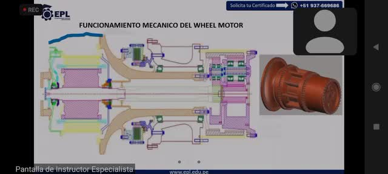
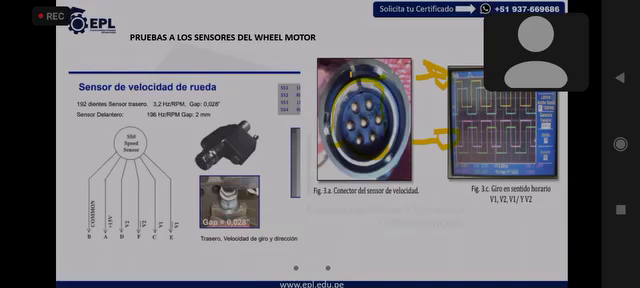
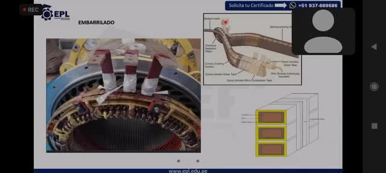
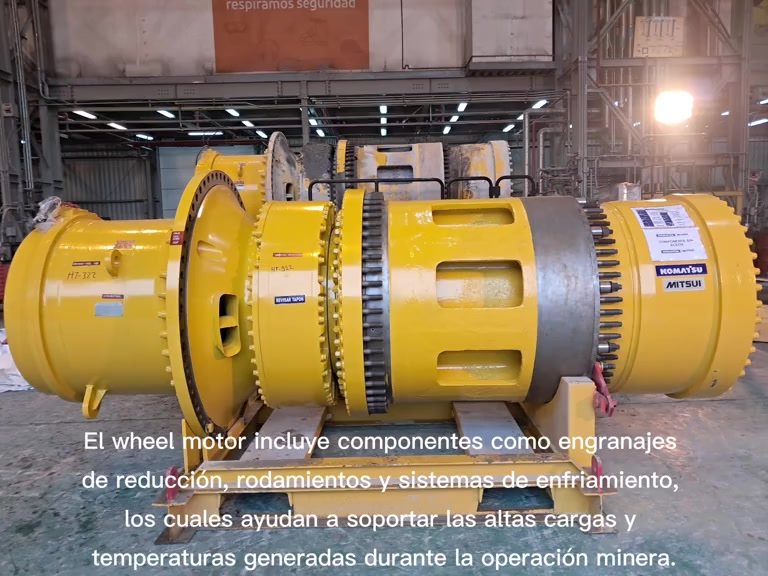
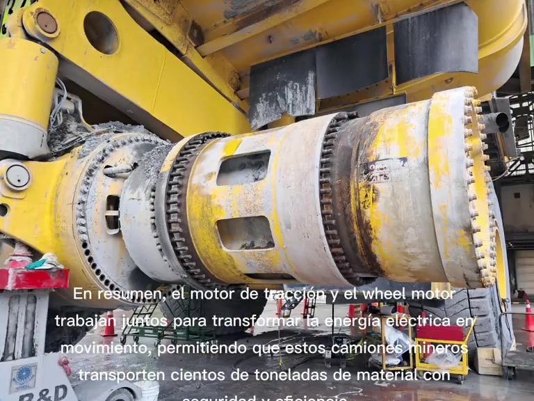
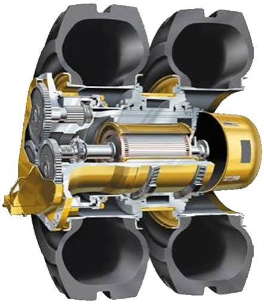
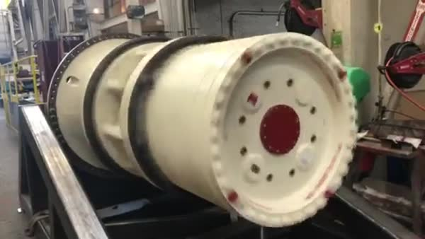
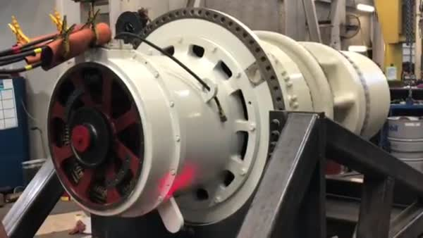
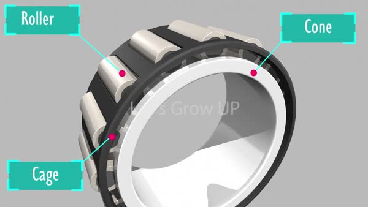
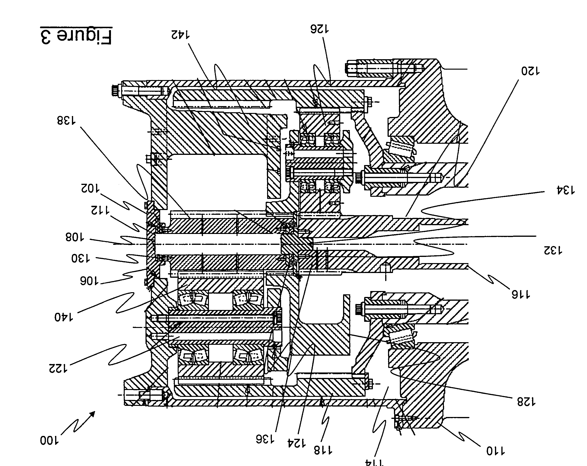
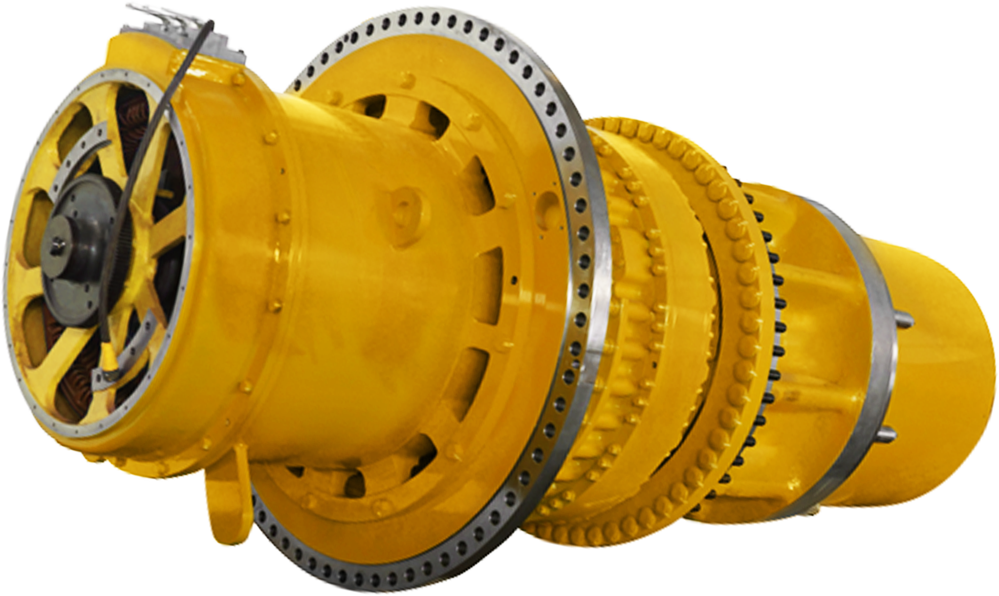
La cinemática conserva 18/27/72 y 23/52/127, tres satélites por etapa y relación 32,6087:1 (−0,03465 % respecto de 32,62). Es un dentado compatible ilustrativo, sin análisis de contacto ni tolerancias de fabricación. No hay dimensiones autenticadas para convertir el mismo ensamble en GDY108; las versiones se comparan documentalmente.
Los números de discos, resortes, espiras, ranuras, pernos y ventanas son aproximados. La capacidad publicada no valida el volumen ni un nivel de aceite del modelo. El reductor, el freno húmedo y la ventilación del motor se mantienen como sistemas distintos. No se simula lubricación, presión hidráulica, esfuerzo ni campos electromagnéticos.
El corte es visual y deja superficies abiertas. GLB conserva geometría, pose y visibilidad seleccionadas; no exporta el plano de corte ni la animación. Llantas y neumáticos son contexto opcional.
Estas denominaciones están publicadas en fichas de camiones. La tabla permite comparar configuraciones; no identifica diferencias internas que los documentos no muestran.
980E-4: hay una contradicción entre fuentes oficiales. No se interpreta como cambio de versión sin evidencia adicional. Algunas fichas contemplan relaciones opcionales.
El ensamble 3D usa GDY106 / 930E-4SE como referencia documental y fotografías rotuladas 930E-4. La configuración CIMETP no tiene una placa de motor legible. No se atribuyen sus ventanas a GDY108 ni se modifica el modelo por una escala arbitraria.
Consulta documental: 13 de octubre de 2026. Son configuraciones verificadas, no una genealogía completa de todas las revisiones GDY106/GDY108.
Fotografía aportada · rótulo 930E-4